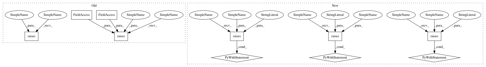

cd53a2712c341a1641989962950f07fdb6b11a85,mne/io/tests/test_apply_function.py,,test_apply_function_verbose,#,30
Before Change
create_info(ch_names, 1., "mag"))
// test return types in both code paths (parallel / 1 job)
pytest.raises(TypeError, raw.apply_function, bad_1)
pytest.raises(ValueError, raw.apply_function, bad_2)
pytest.raises(TypeError, raw.apply_function, bad_1, n_jobs=2)
pytest.raises(ValueError, raw.apply_function, bad_2, n_jobs=2)
// check our arguments
with catch_logging() as sio:
out = raw.apply_function(printer, verbose=False)
After Change
// test return types in both code paths (parallel / 1 job)
with pytest.raises(TypeError, match="Return value must be an ndarray"):
raw.apply_function(bad_1)
with pytest.raises(ValueError, match="Return data must have shape"):
raw.apply_function(bad_2)
with pytest.raises(TypeError, match="Return value must be an ndarray"):
raw.apply_function(bad_1, n_jobs=2)
with pytest.raises(ValueError, match="Return data must have shape"):
raw.apply_function(bad_2, n_jobs=2)
// test return type when `channel_wise=False`
raw.apply_function(printer, channel_wise=False)
with pytest.raises(TypeError, match="Return value must be an ndarray"):
raw.apply_function(bad_1, channel_wise=False)
with pytest.raises(ValueError, match="Return data must have shape"):
raw.apply_function(bad_3, channel_wise=False)
// check our arguments
with catch_logging() as sio:
out = raw.apply_function(printer, verbose=False)
assert len(sio.getvalue()) == 0
assert out is raw
In pattern: SUPERPATTERN
Frequency: 4
Non-data size: 10
Instances
Project Name: mne-tools/mne-python
Commit Name: cd53a2712c341a1641989962950f07fdb6b11a85
Time: 2019-01-25
Author: hubert.jbanville@gmail.com
File Name: mne/io/tests/test_apply_function.py
Class Name:
Method Name: test_apply_function_verbose
Project Name: mne-tools/mne-python
Commit Name: cd53a2712c341a1641989962950f07fdb6b11a85
Time: 2019-01-25
Author: hubert.jbanville@gmail.com
File Name: mne/io/tests/test_apply_function.py
Class Name:
Method Name: test_apply_function_verbose
Project Name: mne-tools/mne-python
Commit Name: a610fbcacda540c1ebff6c9500c85644aaef8ae7
Time: 2020-05-28
Author: larson.eric.d@gmail.com
File Name: mne/viz/tests/test_evoked.py
Class Name:
Method Name: test_plot_white
Project Name: mne-tools/mne-python
Commit Name: 4aa86acaeabd91dd6175b74c25fd3fdcbac531f0
Time: 2018-09-21
Author: larson.eric.d@gmail.com
File Name: mne/viz/tests/test_3d.py
Class Name:
Method Name: test_limits_to_control_points
Project Name: mne-tools/mne-python
Commit Name: 4a52511469992d2abe0686bc6d1588f7469cbb3f
Time: 2019-05-08
Author: larson.eric.d@gmail.com
File Name: mne/decoding/tests/test_receptive_field.py
Class Name:
Method Name: test_receptive_field_nd